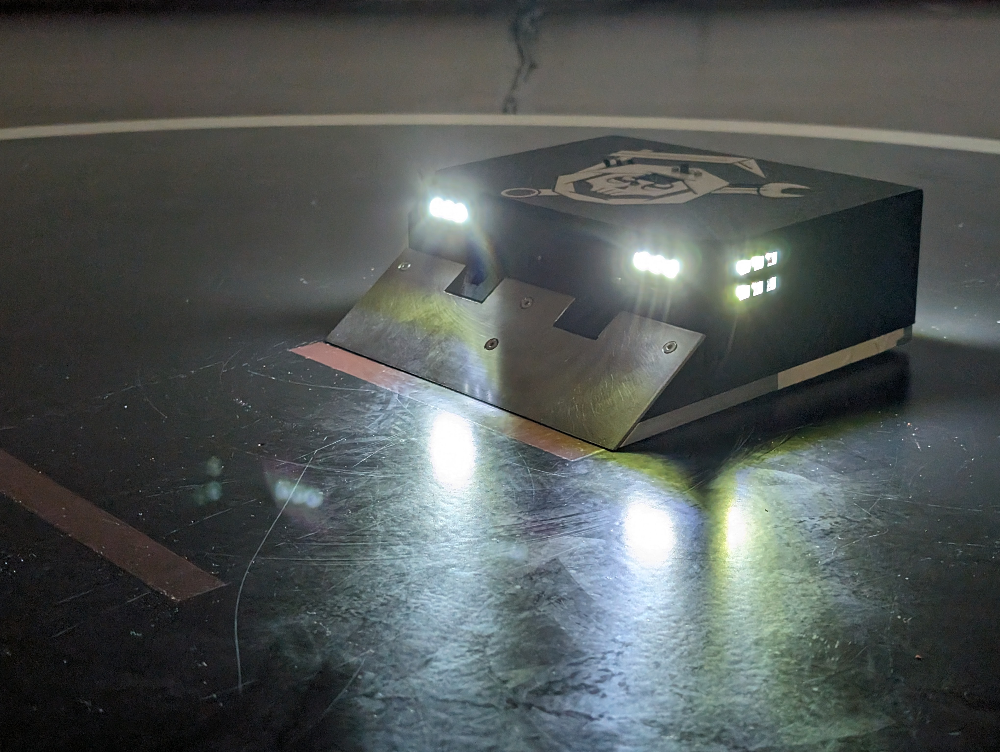
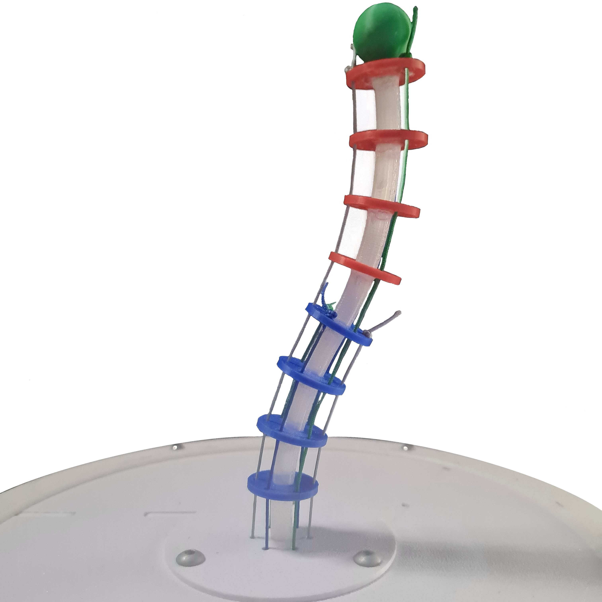
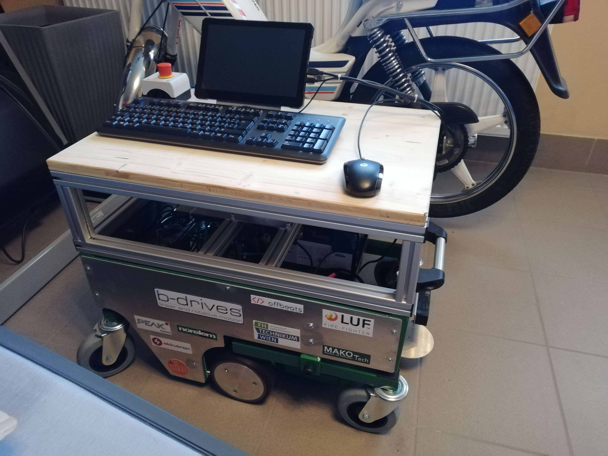

I am an enthusiastic robotics engineer with a love for mobile robots and autonomous vehicles. With the combination of knowledge and eager to learn, I strive to push the boundaries of automation and robotics.
|  |
MREapers - RoboRingout 2024MREapers is a team of motivated students developing an autonomous sumobot to compete in the RoboRingout 2024 competition. Using an Arduino microcontroller, time-of-flight sensors and a differential driven kinematic, the robot was designed with a simple but efficient state machine to autonomously outmaneuver its opponents and push them out of the arena. As a result, the MREapers sumobot placed fourth in the competition against other teams of austrian universities. |
|  |
Master ThesisThis work focuses on evaluating state of the art kinematic models for continuum robots based on their accuracy and computational efficiency. The models are tested on a prototype of a tendon-driven continuum robot to determine which model is best suited for predicting the prototypes kinematic behaviour. |
 |
Bachelor ThesisThis work presents the development and production of a pneumatically operated bionic hand. This prototype is made of soft materials and using PneuFlex Soft actuators as fingers. The concept was tested for functionality in a series of tests. In addition, alternative concepts are shown and evaluated which make it possible to control the actuators more precisely. |
|  |
AMR - Autonomous Mobile RobotThis project involves the development and construction of an autonomous mobile robot. The robot is equipped with an Intel NUC and various sensors for environmental detection and state estimation. This includes a Velodyne 3D LiDAR sensor and two IFM cameras for color and depth images. The communication is based on a CAN bus and a software-sided ROS pipeline. |
An Approach to Numerical Inverse Kinematics of Serial Manipulators using Levenberg-Marquardt OptimizationIn this work the inverse kinematic problem is approached using an on-manifold optimization scheme based on the Levenberg-Marquardt algorithm, including a technique that can be used for auto-differentiation on arbitrary serial open chains. An open-source implementation based on the Matlab robotics-toolbox is provided and tested on industrial manipulators. |